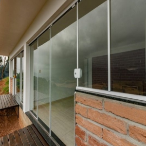
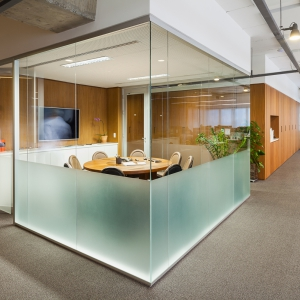

Sua parceira de confiança em vidraçaria e serralheria
Somos uma equipe dedicada de profissionais apaixonados por transformar ideias em realidade. Nossa abordagem centrada no cliente, combinada com décadas de experiência, nos permite entregar projetos excepcionais em vidraçaria e serralheria. Conheça mais sobre a "Eu & Os 3 Montagens".
Residencial Moderno
Transformamos esta residência em um espaço moderno e elegante, utilizando portas de vidro deslizantes para conectar o interior ao jardim, proporcionando uma sensação de amplitude e luminosidade.
Comercial Inovador
Desenvolvemos uma fachada corporativa única, combinando elementos de vidro e metal, criando uma presença impactante que atrai clientes e reflete a identidade da empresa.
"Eu & Os 3 Montagens superou todas as nossas expectativas. Profissionalismo, qualidade e prazos cumpridos à risca. Rec